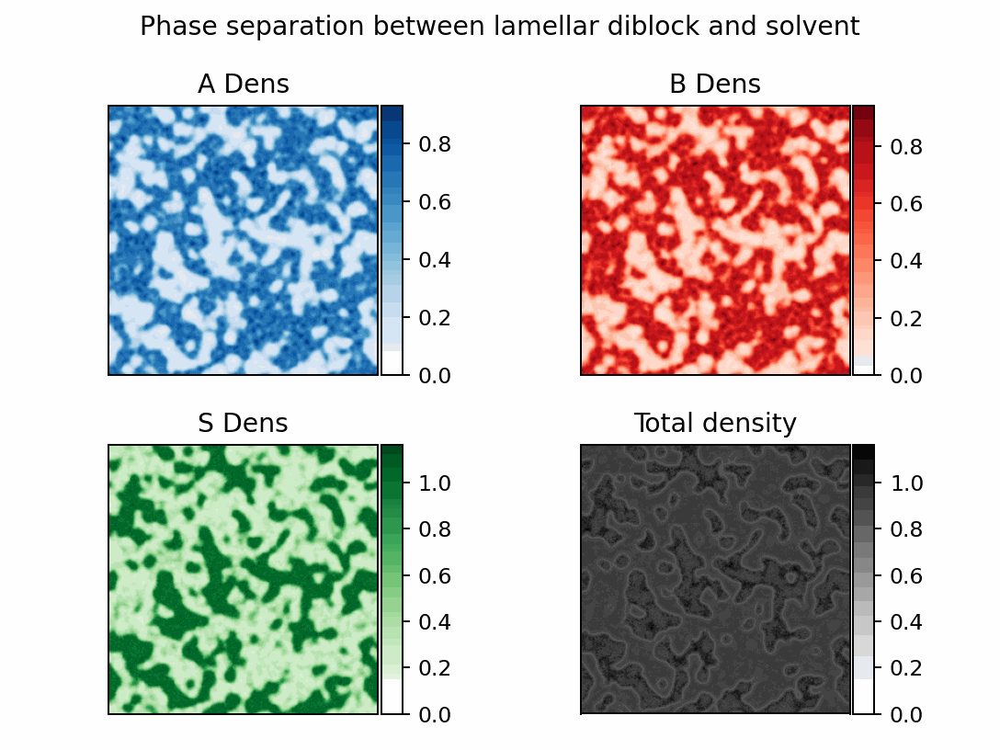

Example Usage
Here is a sample file that will generate a diblock copolymer melt with some solvent.
When you run the file, if it's working then you should see numbers counting to 40 and once they're done a video of the solver finding the local minimum of energy, which looks something like this:

This file actually contains basically all the details you need to run any simulation, and modifications of it are generally enough to produce most different configurations.
Most of the work is in the setup bit of the file which just requires a few steps.
The first thing we need to configure is what types of monomers are going to be in the system. This is done in two steps. First, we declare that they exist (and specify their name and charge).
A_mon = p.Monomer("A", 0)
B_mon = p.Monomer("B", 0)
S_mon = p.Monomer("S", 0)
Then we package them into a list we can hand to the method later.
monomers = [A_mon, B_mon, S_mon]
Now we want to specify what the interactions between these monomers are in this case we are going to use one interaction for like species and one interaction for different species.
tot = 130
diff = 15.2
We want to make a dictionary that actually stores the interactions in a pairwise fashion so we use a dictionary that maps frozensets (which hold the pair efficiently and can be used as a dictionary key) and the values of \(\chi_{ij} N\). These values were selected to give nice separation but still be stable.
FH_terms = {
frozenset({A_mon}): tot,
frozenset({B_mon}): tot,
frozenset({S_mon}): tot,
frozenset({A_mon, B_mon}): tot + diff,
frozenset({A_mon, S_mon}): tot + diff,
frozenset({B_mon, S_mon}): tot + diff,
}
At this point, we need to tell the system what types of polymers are in the system. We are going to specify one polymer, with a length of 5 units (solvent has 1) that is half A and half B. Since we only have one polymer, the list of polyer types is just that one polymer, but with more we would declear them separately and put them together.
N = 5
AB_poly = p.Polymer("AB", N, [(A_mon, 0.5), (B_mon, 0.5)])
polymers = [AB_poly]
Now we tell the system how much of all the species types we want to add. It's good practice to have the total density sum to 1, as this is the default interpretation for our FH parameters, but it can be set to any value and will usually be different if you are matching an external system. We just specify which species there are and how much density they have. This counts the number of that species, so shorter species need more numbers to give the same monomer count.
spec_dict = {AB_poly: 0.5, S_mon: 0.5 * N}
The last thing we need to determine is how our system will be configured. We want to specify how big the system size is (in units of \(R_g\)) and how many grid points we're going to use. This choice also determines the dimensionality of the system.
grid_spec = (256, 256)
box_length = (90, 90)
We will also specify the smearing length for the system. This parameter is related to the range of the interaction between different monomer units.
smear = 0.2
Now we're ready to declare our system. We just slot all the parameters we've established into their proper locations and can set up the polymer simulation. By default, the system will set the global \(N\) value equal to the longest polymer in the system to normalize things. Note that we've also said not to add any salt and set the integration length (this is a fraction of the system N).
ps = p.PolymerSystem(
monomers,
polymers,
spec_dict,
FH_terms,
grid,
smear,
salt_conc=0.0 * N,
integration_width=1 / 10,
)
Our system is now configured, but we need to tell it how to integrate everything. We'll use an appropriate step size and a cold temperature to reduce the noise.
relax_rates = cp.array([0.45] * (ps.w_all.shape[0]))
temps = cp.array([0.001 + 0j] * (ps.w_all.shape[0]))
temps *= ps.gamma.real
Here we're setting the temperatures to only apply to the real fields. This is one of the valid integration schemes available.
We're also going to turn off any electrostatic interactions by setting our \(E\) parameter to zero, and turning the update size on the psi fields to 0 for good measure.
E = 0
psi_rate = 0
psi_temp = 0
To integrate our system, all that we call is integrator.ETD() repeatedly. The
rest of the code is mostly fancy plotting techniques and instructions to save the
trajectory of the run and intermediate steps. But at this point, we should have
successfully run a polymer simulation. The full code will be placed below, but this
and other example runs can found in the examples directory. They provide a strong
template even for complex calculations like proteins or coacervates.
import cupy as cp
import matplotlib.pyplot as plt
from celluloid import Camera
from mpl_toolkits.axes_grid1 import make_axes_locatable
import polycomp.ft_system as p
from polycomp.observables import get_free_energy
# Set a seed for reproducibility (or turn off for full randomization)
cp.random.seed(0)
# Declare all of your polymers with their name and charge
A_mon = p.Monomer("A", 0)
B_mon = p.Monomer("B", 0)
S_mon = p.Monomer("S", 0)
# Declare a list of all the monomer types in the simulation
# (Salts are handled automatically if needed)
monomers = [A_mon, B_mon, S_mon]
tot = 130
diff = 15.2
# Declare a Flory-Huggins array with each cross iteraction
# Here we use total and difference to simplify the description
FH_terms = {
frozenset({A_mon}): tot,
frozenset({B_mon}): tot,
frozenset({S_mon}): tot,
frozenset({A_mon, B_mon}): tot + diff,
frozenset({A_mon, S_mon}): tot + diff,
frozenset({B_mon, S_mon}): tot + diff,
}
# Declare the reference polymer length for the system. In this case it will be
# the same as the length of the only polymer in solution
N = 5
# Declare all the polymer types in solution. In this case we have a single
# "AB" diblock copolymer that is half A and half B, with a total length of N.
AB_poly = p.Polymer("AB", N, [(A_mon, 0.5), (B_mon, 0.5)])
# Declare a list of all the polymers in simulation
polymers = [AB_poly]
# Declare a dictionary with all the species in the system (this will include
# polymers and solvents, but here we just have one polymer). We also declare the
# concentration of each species, in this case just 1.
spec_dict = {AB_poly: 0.5, S_mon: 0.5 * N}
# Declare the number of grid points across each axis. This will be a 2D
# simulation with 256 grid points along each dimension.
grid_spec = (256, 256)
# Declare the side length of the box along each axis. Here is a 25x25 length
# square.
box_length = (90, 90)
# Declare the grid object as specified using our parameterss.
grid = p.Grid(box_length=box_length, grid_spec=grid_spec)
# Declare the smearing length for the charge and density
smear = 0.2
# We can now declare the full polymer system. Read the full documentation for
# details but we use previously declared variables and specify salt concentration
# and integration fineness along the polymer.
ps = p.PolymerSystem(
monomers,
polymers,
spec_dict,
FH_terms,
grid,
smear,
salt_conc=0.0 * N,
integration_width=1 / 10,
)
# Now we move to our integration parameters. We need a timestep associated with
# each field, but they'll all be the same here.
relax_rates = cp.array([0.45] * (ps.w_all.shape[0]))
# We also declare a temperature array which is the same shape
temps = cp.array([0.01 + 0j] * (ps.w_all.shape[0]))
# This temperature corresponds to using the "standard" CL integrator, but
# other versions are also
temps *= ps.gamma.real
# Because this is an uncharged system, we set E to 0, and set all the electric
# field rates to 0 as well
E = 0
psi_rate = 0
psi_temp = 0
# Now we actually declare the integrator
integrator = p.CL_RK2(ps, relax_rates, temps, psi_rate, psi_temp, E)
# These are all plotting parameters and will need to be changed if we want
# more or less plots
nrows = 2
ncols = 2
fig, axes = plt.subplots(nrows=nrows, ncols=ncols, dpi=170)
fig.suptitle("Phase separation between lamellar diblock and solvent")
multi_cam = Camera(fig)
# generate an initial density for the starting plot
ps.get_densities()
im = []
div = []
cax = []
cb = []
for i in range(nrows):
im.append([0] * ncols)
div.append([0] * ncols)
cax.append([0] * ncols)
cb.append([0] * ncols)
# Initial plots
im[0][0] = axes[0, 0].imshow(
ps.phi_all[ps.monomers.index(A_mon)].real.get(), cmap="Blues"
)
axes[0, 0].set_title("A Dens")
im[0][1] = axes[0, 1].imshow(
ps.phi_all[ps.monomers.index(B_mon)].real.get(), cmap="Reds"
)
axes[0, 1].set_title("B Dens")
im[1][0] = axes[1, 0].imshow(
ps.phi_all[ps.monomers.index(S_mon)].real.get(), cmap="Greens"
)
axes[1, 0].set_title("S Dens")
im[1][1] = axes[1, 1].imshow(cp.sum(ps.phi_all, axis=0).real.get(), cmap="Greys")
axes[1, 1].set_title("Total density")
# Declare some empty arrays to store our variables
dens_traj = []
free_energy_traj = []
# Set the number of steps per frame
steps = 300
# Set the number of arrays to capture
for i in range(40):
# We average over multiple views to reduce the noise for visualization, could
# just plot directly as well to simplify this
hold_A = cp.zeros_like(ps.phi_all[0].real)
hold_B = cp.zeros_like(ps.phi_all[0].real)
hold_S = cp.zeros_like(ps.phi_all[0].real)
hold_T = cp.zeros_like(ps.phi_all[0].real)
for _ in range(steps):
# Collect the variables we want every step and average over some of them
free_energy_traj.append(get_free_energy(ps, E))
integrator.ETD()
hold_A += ps.phi_all[ps.monomers.index(A_mon)].real / steps
hold_B += ps.phi_all[ps.monomers.index(B_mon)].real / steps
hold_S += ps.phi_all[ps.monomers.index(S_mon)].real / steps
hold_T += cp.sum(ps.phi_all, axis=0).real / steps
# Save intermediate results here
cp.save("free_energy_traj", cp.array(free_energy_traj))
dens_traj.append((hold_A, hold_B, hold_T))
# Create new plots (use celluloid to make a simple animation)
im[0][0] = axes[0, 0].imshow(hold_A.get(), cmap="Blues", vmin=0)
im[0][1] = axes[0, 1].imshow(hold_B.get(), cmap="Reds", vmin=0)
im[1][0] = axes[1, 0].imshow(hold_S.get(), cmap="Greens", vmin=0)
im[1][1] = axes[1, 1].imshow(hold_T.get(), cmap="Greys", vmin=0)
multi_cam.snap()
# Save data needed to restart simulation
cp.save("midpoint", ps.w_all)
cp.save("psi_midpoint", ps.psi)
cp.save("live_dens_traj", cp.array(dens_traj))
# Print current progress
print(i)
# Generate arrays from the lists for easier handling
dens_traj = cp.array(dens_traj)
free_energy_traj = cp.array(free_energy_traj)
# Save the full trajectories
cp.save("dens_traj", dens_traj)
cp.save("free_energy_traj", free_energy_traj)
# The next section is all to make relatively nice animations, mainly around
# accurately handling color bar scales so the 2D plots are interpretable
for ax in axes.flat:
ax.set_xticks([])
ax.set_yticks([])
for i in range(nrows):
for j in range(ncols):
if im[i][j] == 0:
continue
if nrows == 1:
div[i][j] = make_axes_locatable(axes[j])
else:
div[i][j] = make_axes_locatable(axes[i, j])
cax[i][j] = div[i][j].append_axes("right", size="8%", pad=0.02)
for i in range(nrows):
for j in range(ncols):
cb[i][j] = fig.colorbar(im[i][j], cax=cax[i][j], orientation="vertical")
if im[i][j] == 0:
continue
if nrows == 1:
div[i][j] = make_axes_locatable(axes[j])
else:
div[i][j] = make_axes_locatable(axes[i, j])
cax[i][j] = div[i][j].append_axes("right", size="8%", pad=0.02)
cb[i][j].remove()
cb[i][j] = fig.colorbar(im[i][j], cax=cax[i][j], orientation="vertical")
# Final plotting and saving the figures
fig.tight_layout()
multimation = multi_cam.animate()
multimation.save("movie_traj.gif", writer="pillow")
plt.show()